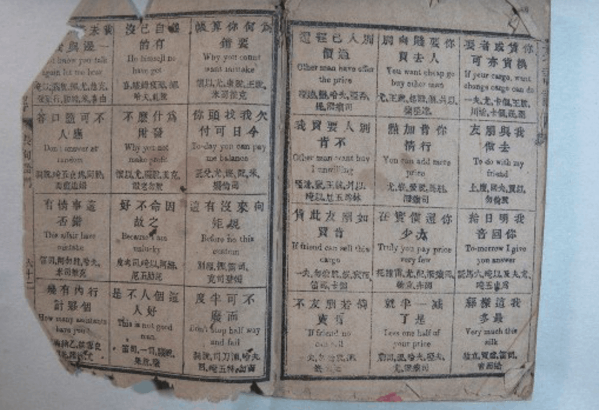
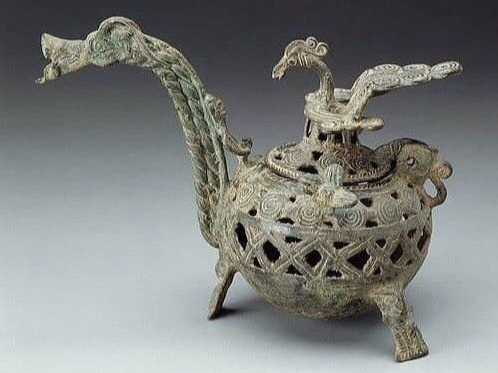
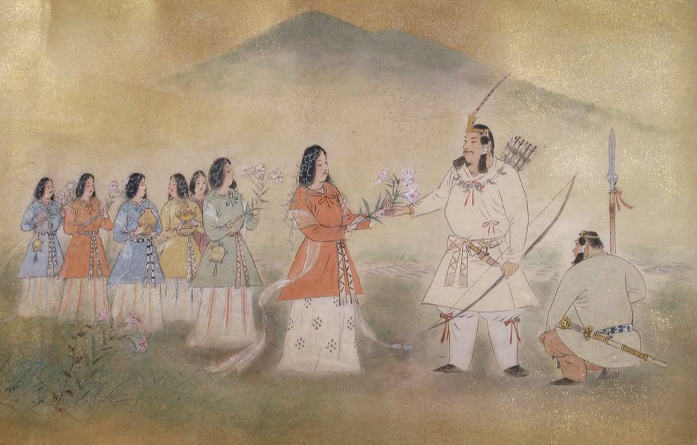
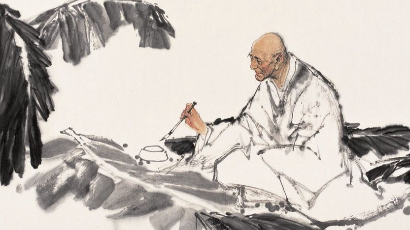
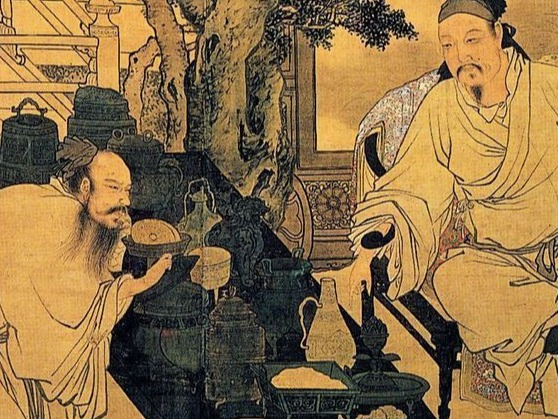
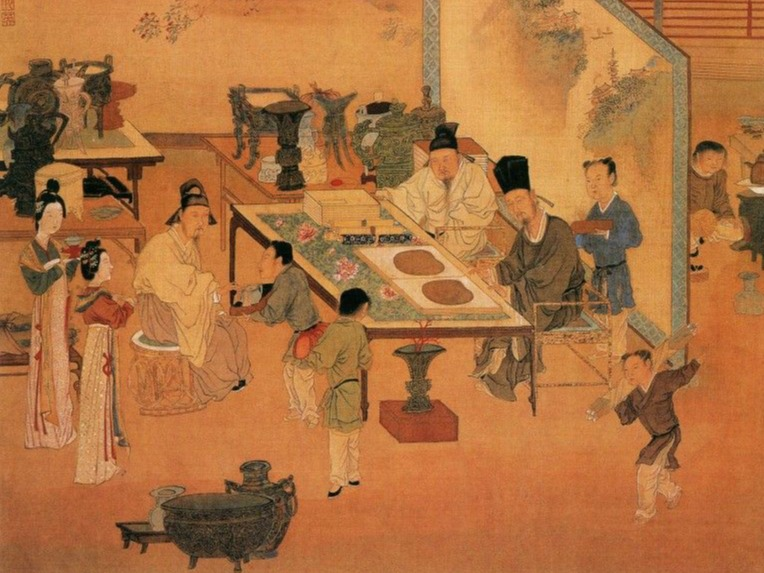
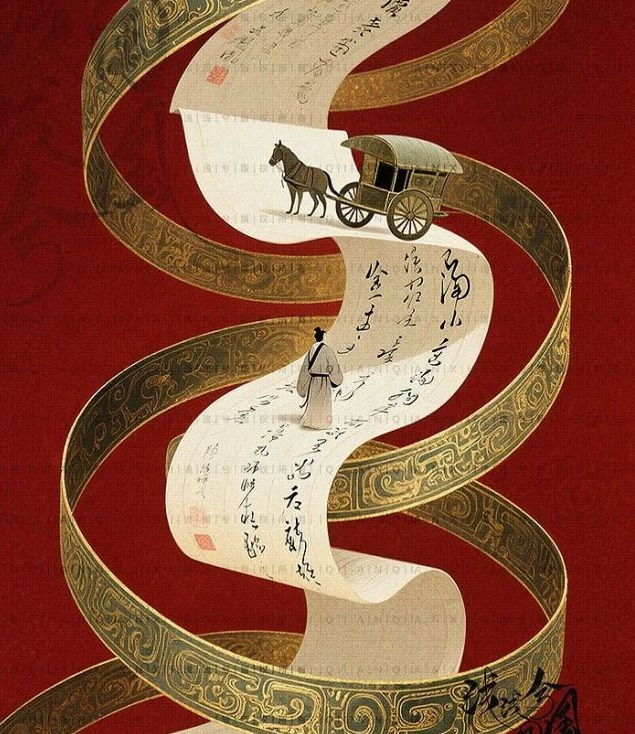
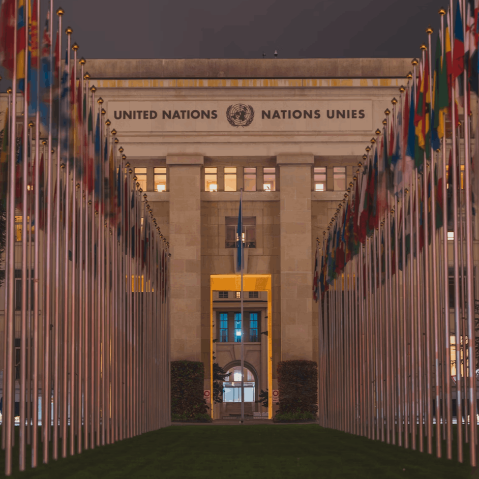

Website Software从“手艺人”到“战略家”，在AI浪潮中完成价值突围
翻译的起源，其实有着两种使命。
第一，沟通的使命
从古代信使和商旅开始，翻译让不同语言的人能够互相理解，它的核心是“让彼此听得懂”。
第二，传承的使命
由牧师、僧侣和学者延续下来，翻译让思想和文化在文明之间流动，它的核心是“让思想得以流传”。
这两种方向，也决定了翻译后来发展的样子 ——
它既是一种理念，也是一门技巧。

设计师的起源，其实也有两种使命。
第一，实用的使命
从工匠与手艺人开始，设计让器物更合乎人性，它的核心是“让生活更好用”。
第二，审美的使命
由艺术家与建筑师延续下来，设计让世界更有意义，它的核心是“让生活更有美感”。
这两种方向，也塑造了设计的灵魂 ——
它既是解决问题的工具，也是一种表达思想的语言。






设计师最早来自工匠和艺术家，他们擅长创造“形式”；
翻译员则起源于信使和学者，他们负责传递“意义”。
随着时间推移，翻译员的两种路线越走越清晰：
信使那一支，成了法律、商务等专业翻译，靠技术守住「精准」；
学者那一支，发展成文学翻译、本地化工作，用「传神」创造价值。
而设计师这边，从工匠与艺术家的传统出发，也延伸出UI、UX等专业，
从追求「形式」的美，走向「体验」的善。
翻译行业走向体系化的关键催化剂，源于二战后的两项重大历史事件。
第一要素，纽伦堡国际审判：
是人类历史上第一次需要使用英、法、俄、德四种语言同时进行的大规模审判。同步传译技术被首次大规模投入使用。
翻译员进入隔音的同传箱，与发言几乎同步地进行翻译。
这是一个根本性的转变，它把翻译从一项依赖个人天赋的语言艺术，开始转变为一套可复制、可标准化的技术流程。
第二要素，联合国：
作为第一个需要全天候、多语种运作的常设机构，语言服务成了维系这台庞大机器运转的核心齿轮。
为此，联合国建立了一套极其严格的翻译招聘、培训和考核体系。可以说，是这种制度化、规模化的需求，最终将翻译推向了一个高度专业化的现代职业。

设计师的职业体系化，核心催化事件是工业革命及其后的包豪斯运动。
第一要素，工业革命：
工业革命带来了机械化大生产，导致制造与设计分离，
催生了专门解决 “如何造得好用又好看” 这一问题的职业需求，这是职业诞生的土壤。
第二要素，包豪斯：
包豪斯的成立，首次建立了现代设计教育体系，提出“形式追随功能”等核心原则，旨在调和艺术与工业，
将个人化的“手艺”系统化为可教授的“科学”，最终确立了设计师作为现代职业的地位。
广告设计师：依赖手绘、手工排版等纯技艺。
翻译员：依赖对源语言和目标语言的精深掌握、庞大的词汇量、深厚的文化底蕴和出色的写作功底。
这是一个高度知识密集型的“手艺活”，翻译家备受尊敬。
广告设计师：被电脑和设计软件（如Photoshop）革命。
翻译员：被计算机辅助翻译工具（CAT Tools，如Trados、memoQ） 和电子词典、语料库所革命。
广告设计师：在线设计平台（如Canva）和素材库让普通人也能做设计。
翻译员：在线词典（如有道、柯林斯）、机器翻译（如早期的谷歌翻译）和互联网信息，
使得任何懂点外语的人都能进行简单的信息转换。专业翻译员在“基础信息传递”上的壁垒被打破。
广告设计师：价值从“做图”转向“品牌策略”和“创意概念”。
翻译员：价值从“字对字转换”转向：“能创造意义”的多面手。
这意味着，光会转换语言已经不够了。得会把笑话、梗这些文化东西“再创作” 成对方能懂的形式；
得能抓住原作的风格和神韵，不管是文学的还是商业的；
还得懂行，在金融、法律、科技这些领域，甚至得成为半个专家。
当技术解决了“做得对”（信使的精准），
人类的智慧便全力聚焦于“何为好”（学者的传神）与“何为美”（艺术家的体验）。
这便是所有创造性职业共同的进化方向。
那么，您所在的领域，
那个必须由人类来定义的 ‘好’与‘美’ ，
又是什么呢？
Website Software